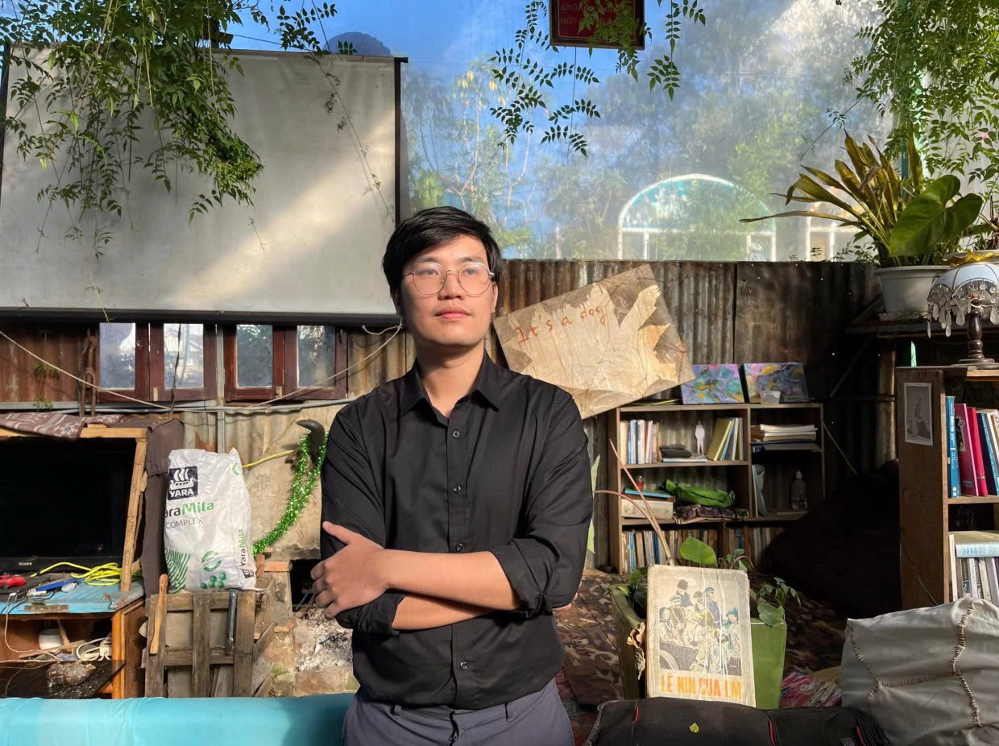

Phóng Viên Thể Thao Chuyên Nghiệp
Với hơn 10 năm kinh nghiệm, tôi chuyên sâu vào việc phân tích chiến thuật, kể những câu chuyện nhân vật đầy cảm hứng và mang đến góc nhìn đa chiều về thế giới thể thao trong nước và quốc tế.